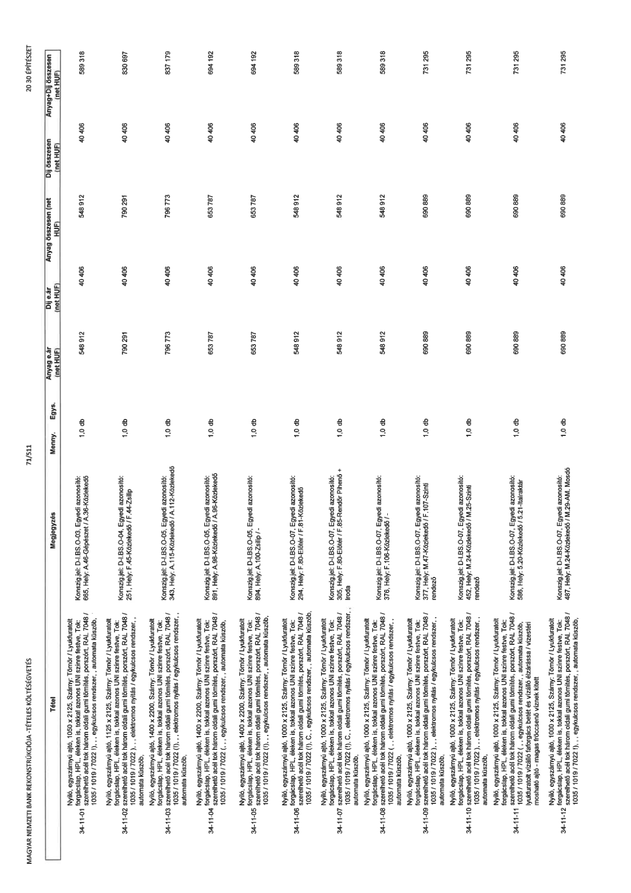

| Tétel | Megjegyzés | Menny. | Egys. | Anyag e.ár (net HUF) | Díj e.ár (net HUF) | Anyag összesen (net HUF) | Díj összesen (net HUF) | Anyag+Díj összesen (net HUF) |
|---|---|---|---|---|---|---|---|---|
| 34-11-01 Nyíló, egyszárnyú ajtó, 1050 x 2125, Szárny: Tömör / Lyukfuratolt forgácslap, HPL, éleken is, tokkal azonos UNI színre festve, Tok: szerelhető acél tok három oldali gumi tömítés, porszórt, RAL 7048 / 1035 / 1019 / 7022 (!), „ egykulcsos rendszer, „ automata küszöb, | Konszig.jel: D-I.BS-O-03, Egyedi azonosító: 665, Hely: A.46-Gépészet / A.36-Közlekedő | 1,0 | db | 548 912 | 40 406 | 548 912 | 40 406 | 589 318 |
| 34-11-02 Nyíló, egyszárnyú ajtó, 1125 x 2125, Szárny: Tömör / Lyukfuratolt forgácslap, HPL, éleken is, tokkal azonos UNI színre festve, Tok: szerelhető acél tok három oldali gumi tömítés, porszórt, RAL 7048 / 1035 / 1019 / 7022 (!), „ elektromos nyitás / egykulcsos rendszer, „ automata küszöb, | Konszig.jel: D-I.BS-O-04, Egyedi azonosító: 251, Hely: F.45-Közlekedő / F.44-Zsilip | 1,0 | db | 790 291 | 40 406 | 790 291 | 40 406 | 830 697 |
| 34-11-03 Nyíló, egyszárnyú ajtó, 1400 x 2200, Szárny: Tömör / Lyukfuratolt forgácslap, HPL, éleken is, tokkal azonos UNI színre festve, Tok: szerelhető acél tok három oldali gumi tömítés, porszórt, RAL 7048 / 1035 / 1019 / 7022 (!), „ elektromos nyitás / egykulcsos rendszer, „ automata küszöb, | Konszig.jel: D-I.BS-O-05, Egyedi azonosító: 343, Hely: A.115-Közlekedő / A.112-Közlekedő | 1,0 | db | 796 773 | 40 406 | 796 773 | 40 406 | 837 179 |
| 34-11-04 Nyíló, egyszárnyú ajtó, 1400 x 2200, Szárny: Tömör / Lyukfuratolt forgácslap, HPL, éleken is, tokkal azonos UNI színre festve, Tok: szerelhető acél tok három oldali gumi tömítés, porszórt, RAL 7048 / 1035 / 1019 / 7022 (!), „ egykulcsos rendszer, „ automata küszöb, | Konszig.jel: D-I.BS-O-05, Egyedi azonosító: 891, Hely: A.98-Közlekedő / A.96-Közlekedő | 1,0 | db | 653 787 | 40 406 | 653 787 | 40 406 | 694 192 |
| 34-11-05 Nyíló, egyszárnyú ajtó, 1400 x 2200, Szárny: Tömör / Lyukfuratolt forgácslap, HPL, éleken is, tokkal azonos UNI színre festve, Tok: szerelhető acél tok három oldali gumi tömítés, porszórt, RAL 7048 / 1035 / 1019 / 7022 (!), „ egykulcsos rendszer, „ automata küszöb, | Konszig.jel: D-I.BS-O-05, Egyedi azonosító: 894, Hely: A.100-Zsilip / - | 1,0 | db | 653 787 | 40 406 | 653 787 | 40 406 | 694 192 |
| 34-11-06 Nyíló, egyszárnyú ajtó, 1000 x 2125, Szárny: Tömör / Lyukfuratolt forgácslap, HPL, éleken is, tokkal azonos UNI színre festve, Tok: szerelhető acél tok három oldali gumi tömítés, porszórt, RAL 7048 / 1035 / 1019 / 7022 (!), „ egykulcsos rendszer, „ automata küszöb, | Konszig.jel: D-I.BS-O-07, Egyedi azonosító: 294, Hely: F.80-Előtér / F.81-Közlekedő | 1,0 | db | 548 912 | 40 406 | 548 912 | 40 406 | 589 318 |
| 34-11-07 Nyíló, egyszárnyú ajtó, 1000 x 2125, Szárny: Tömör / Lyukfuratolt forgácslap, HPL, éleken is, tokkal azonos UNI színre festve, Tok: szerelhető acél tok három oldali gumi tömítés, porszórt, RAL 7048 / 1035 / 1019 / 7022 (!), „ elektromos nyitás / egykulcsos rendszer, „ automata küszöb, | Konszig.jel: D-I.BS-O-07, Egyedi azonosító: 305, Hely: F.80-Előtér / F.85-Rendőr Pihenő + Iroda | 1,0 | db | 548 912 | 40 406 | 548 912 | 40 406 | 589 318 |
| 34-11-08 Nyíló, egyszárnyú ajtó, 1000 x 2125, Szárny: Tömör / Lyukfuratolt forgácslap, HPL, éleken is, tokkal azonos UNI színre festve, Tok: szerelhető acél tok három oldali gumi tömítés, porszórt, RAL 7048 / 1035 / 1019 / 7022 (!), „ egykulcsos rendszer, „ automata küszöb, | Konszig.jel: D-I.BS-O-07, Egyedi azonosító: 376, Hely: F.106-Közlekedő / - | 1,0 | db | 548 912 | 40 406 | 548 912 | 40 406 | 589 318 |
| 34-11-09 Nyíló, egyszárnyú ajtó, 1000 x 2125, Szárny: Tömör / Lyukfuratolt forgácslap, HPL, éleken is, tokkal azonos UNI színre festve, Tok: szerelhető acél tok három oldali gumi tömítés, porszórt, RAL 7048 / 1035 / 1019 / 7022 (!), „ elektromos nyitás / egykulcsos rendszer, „ automata küszöb, | Konszig.jel: D-I.BS-O-07, Egyedi azonosító: 377, Hely: M.47-Közlekedő / F.107-Szinti rendező | 1,0 | db | 690 889 | 40 406 | 690 889 | 40 406 | 731 295 |
| 34-11-10 Nyíló, egyszárnyú ajtó, 1000 x 2125, Szárny: Tömör / Lyukfuratolt forgácslap, HPL, éleken is, tokkal azonos UNI színre festve, Tok: szerelhető acél tok három oldali gumi tömítés, porszórt, RAL 7048 / 1035 / 1019 / 7022 (!), „ elektromos nyitás / egykulcsos rendszer, „ automata küszöb, | Konszig.jel: D-I.BS-O-07, Egyedi azonosító: 452, Hely: M.24-Közlekedő / M.25-Szinti rendező | 1,0 | db | 690 889 | 40 406 | 690 889 | 40 406 | 731 295 |
| 34-11-11 Nyíló, egyszárnyú ajtó, 1000 x 2125, Szárny: Tömör / Lyukfuratolt forgácslap, HPL, éleken is, tokkal azonos UNI színre festve, Tok: szerelhető acél tok három oldali gumi tömítés, porszórt, RAL 7048 / 1035 / 1019 / 7022 (!), „ egykulcsos rendszer, „ automata küszöb, lyukfuratolt vízálló faforgács betét és vízálló élzárással / víztéri mosható ajtó - magas fröccsenő víznek kitett | Konszig.jel: D-I.BS-O-07, Egyedi azonosító: 586, Hely: 5.20-Közlekedő / 5.21-Iratraktár | 1,0 | db | 690 889 | 40 406 | 690 889 | 40 406 | 731 295 |
| 34-11-12 Nyíló, egyszárnyú ajtó, 1000 x 2125, Szárny: Tömör / Lyukfuratolt forgácslap, HPL, éleken is, tokkal azonos UNI színre festve, Tok: szerelhető acél tok három oldali gumi tömítés, porszórt, RAL 7048 / 1035 / 1019 / 7022 (!), „ egykulcsos rendszer, „ automata küszöb, | Konszig.jel: D-I.BS-O-07, Egyedi azonosító: 487, Hely: M.24-Közlekedő / M.29-AM. Mosdó | 1,0 | db | 690 889 | 40 406 | 690 889 | 40 406 | 731 295 |
